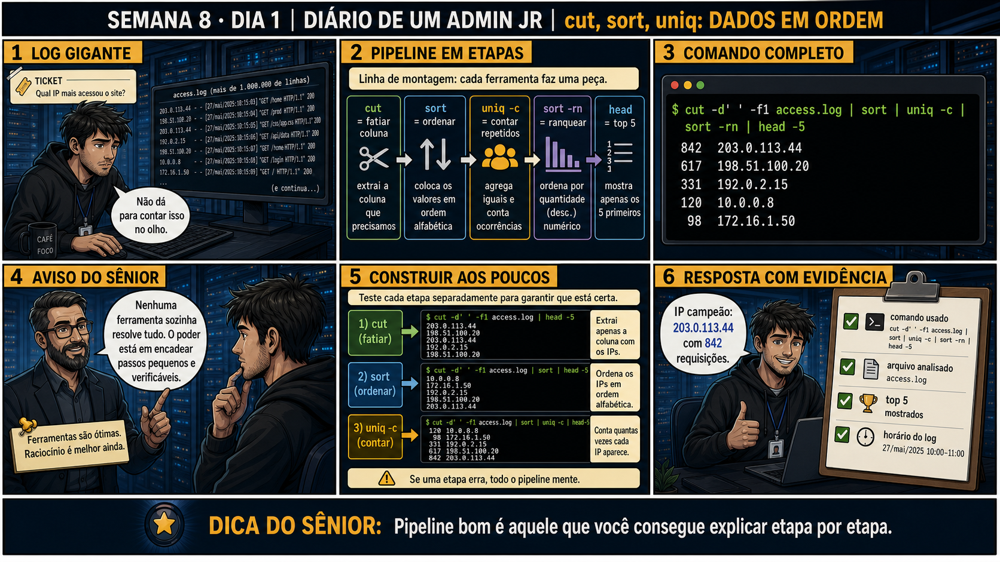

DIARIO DE UM ADMIN JR. | FASE 1 — LINUX, DO BÁSICO AO AVANÇADO
🔗 Conecta com a Semana 2, Dia 3: grep e find te ensinaram a buscar. Hoje entra um
novo bloco: ferramentas que não só encontram texto, mas fatiam, ordenam e contam dados — a base que vai
alimentar a automação em bash que começa na Semana 9.
🔓 Privilégio de hoje: montar pipelines de texto com cut, sort e uniq. Você
ganha o hábito de encadear ferramentas pequenas, testando cada etapa antes de conectar a próxima.
Semana 8 · Dia 1 | Nível Júnior
cut, sort, uniq: Dados em Ordem
pipeline bom é aquele que você consegue explicar etapa por etapa
ANTES DE ALTERAR, OBSERVE. DEPOIS DE ALTERAR, VALIDE.

1. O chamado
Ticket: "qual IP mais acessou o site?" O arquivo access.log tem mais de um
milhão de linhas — impossível contar no olho. Você precisa de uma linha de montagem de ferramentas pequenas,
cada uma fazendo uma peça do trabalho.
💡 Passa o mouse nas palavras destacadas pra ver uma dica rápida — clica se quiser a explicação completa com analogia.
2. O sênior te conta
Segunda-feira, abrindo a Semana 8
Lá na Semana 2 você aprendeu grep e find — encontrar coisas. Hoje abre um
bloco novo: ferramentas que não só encontram, mas fatiam, ordenam e contam dados. É a base que vai
alimentar a automação em bash que começa na Semana 9 — sem esses fundamentos, script nenhum consegue
processar dados de verdade.
Lembro do meu primeiro chamado desse tipo: "qual IP mais acessou o site?", com um access.log
de mais de um milhão de linhas. Meu primeiro instinto, ainda muito júnior, foi abrir o arquivo num editor
de texto pra "dar uma olhada". O editor travou. Um milhão de linhas não é coisa que se lê no olho.
Um sênior mais experiente me mostrou algo que mudou como eu penso sobre terminal desde então: em vez de
uma ferramenta única e complexa, ele encadeou várias ferramentas pequenas, cada uma fazendo uma coisa só,
muito bem feita. cut fatiava a coluna do IP. sort colocava em ordem.
uniq -c contava repetições — mas só funciona certo se a entrada já estiver ordenada, porque
ele só agrupa linhas idênticas que estão uma do lado da outra. Depois outro sort -rn
ranqueava por quantidade, e head mostrava só o topo.
Cinco ferramentas, cada uma simples, conectadas por pipe. Nenhuma delas sozinha resolvia o problema —
juntas, formavam uma linha de montagem que processava um milhão de linhas em segundos. E o mais
importante: cada etapa podia ser testada isoladamente antes de conectar a próxima. Hoje você monta essa
mesma cadeia, peça por peça, sentindo por que "pipeline bom é aquele que você consegue explicar etapa por
etapa".
3. Decodificador de conceitos
Clica em qualquer termo pra ver a definição completa e uma analogia do dia a dia:
4. Ferramentas e leitura da evidência
Comando
O que observar e por que importa
cut -d' ' -f1
Extrai a primeira coluna (separada por espaço) de cada linha — no caso, o IP.
sort | uniq -c
Ordena e conta repetições — uniq -c exige entrada já ordenada pra funcionar corretamente.
sort -rn | head -5
Ranqueia numericamente em ordem decrescente e mostra só os 5 primeiros.
5. Laboratório guiado — pegue na mão, comando por comando
Segurança: execute os testes apenas em VM descartável e confirme nomes de discos, hosts e arquivos antes de cada comando.
Ação: crie um arquivo de teste com algumas linhas repetidas, simulando um log.
$ cat > teste.log << 'EOF'
10.0.0.1 GET /home
10.0.0.2 GET /login
10.0.0.1 GET /home
10.0.0.3 GET /home
10.0.0.1 GET /login
EOF
Resultado esperado: arquivo de teste com repetições intencionais, IP 10.0.0.1 aparecendo 3 vezes.
Por que fizemos isso: um arquivo pequeno com resultado esperado conhecido (você sabe que 10.0.0.1 deve vencer) é o que permite validar cada etapa da cadeia com confiança.
Cilada comum: testar direto num arquivo grande de produção — sem saber a resposta certa de antemão, fica impossível confirmar se o pipeline está funcionando.
Ação: rode só o cut isolado e confirme que a coluna certa está sendo extraída.
$ cut -d' ' -f1 teste.log
Resultado esperado: lista de 5 IPs, na ordem original do arquivo, sem ordenação ainda.
Por que fizemos isso: testar cut isolado primeiro é o que garante que a coluna extraída é realmente a certa, antes de complicar a cadeia com mais ferramentas.
Cilada comum: assumir o delimitador errado — se o log usar tab ou vírgula em vez de espaço, -d' ' extrai a coluna errada silenciosamente.
Ação: adicione sort e depois uniq -c, um de cada vez, verificando a saída em cada passo.
Resultado esperado: primeiro os IPs ordenados alfabeticamente, depois a contagem correta — "3 10.0.0.1", "1 10.0.0.2", "1 10.0.0.3".
Por que fizemos isso: ver o sort funcionar antes do uniq -c é o que prova, na prática, por que a ordem entre eles importa — é exatamente o erro que a Questão 3 vai testar.
Cilada comum: pular direto pra uniq -c sem o sort, "pra economizar um comando" — o resultado sai tecnicamente errado, contando em blocos separados.
🧑🏫 Aqui entra o Mentor (em breve): se uma contagem parecer errada mesmo com sort aplicado, este é o ponto onde o chat com o Sênior-IA vai ajudar a debugar a cadeia.
Ação: complete a cadeia com sort -rn e head, obtendo o ranking final.
Resultado esperado: "3 10.0.0.1" no topo, confirmando exatamente o resultado esperado desde o início.
Por que fizemos isso: ver o resultado final bater com o que você já esperava (porque montou o arquivo de teste você mesmo) é a validação mais forte possível antes de rodar a mesma cadeia num arquivo real de um milhão de linhas.
Cilada comum: confiar no resultado só porque "parece razoável" num arquivo grande — sem ter testado antes num arquivo pequeno e conhecido, você não tem como confirmar que o pipeline está certo.
Ação: documente comando completo usado, arquivo analisado, resultado do top.
# anote no seu diário de bordo:
Comando: cut -d' ' -f1 teste.log | sort | uniq -c | sort -rn | head -3
Arquivo: teste.log (5 linhas)
Resultado: 3 10.0.0.1 (confirmado, bate com esperado)
Resultado esperado: registro completo reproduzindo o painel 6 da prancha de hoje.
Por que fizemos isso: documentar o comando completo é o que permite reaplicar exatamente a mesma cadeia num arquivo de produção real, sem precisar reconstruir tudo do zero.
Cilada comum: documentar só o resultado final, sem o comando completo — sem ele, ninguém (nem você) consegue reproduzir a análise depois.
6. Antes de ver as opções — tenta responder
🧠 Recall ativo: qual é o papel de cada ferramenta nessa cadeia:
cut | sort | uniq -c | sort -rn | head?
cut fatia a coluna que interessa →
sort ordena os valores →
uniq -c conta repetições →
sort -rn ranqueia por quantidade → head mostra só o topo. Cada ferramenta faz uma coisa simples e bem
feita.
QUESTÃO 1 de 3
7. Questão comentada — clica numa alternativa
Você precisa descobrir qual IP mais aparece num log de acesso com mais de um
milhão de linhas. Qual é a abordagem correta?
💡 Analogia do Sênior para Fixar: O comando 'cut -d: -f1 /etc/passwd' é como a tesoura do alfaiate: fatia o texto usando os dois-pontos como guia e extrai apenas a coluna com os nomes de usuários.
QUESTÃO 2 de 3 — cenário de erro real
7.1 O resultado mostra 842 requisições do IP 203.0.113.44 — como confirmar antes de reportar?
O topo do ranking mostra 842 203.0.113.44, claramente destacado dos demais.
Qual é o passo de validação correto antes de reportar esse resultado?
💡 Analogia do Sênior para Fixar: O comando 'sort | uniq -c' é como o caixa contando cédulas de dinheiro: primeiro empilha todas as notas iguais juntas e depois conta quantas notas de 50 e 100 existem no maço.
QUESTÃO 3 de 3 — detalhe que confunde todo iniciante
7.2 "uniq -c sozinho, sem sort antes, já conta certo?"
Um colega roda só cut -d' ' -f1 access.log | uniq -c, sem o sort antes do
uniq -c, e fica confuso com a contagem estranha.
Por que pular o sort antes do uniq -c dá resultado errado?
💡 Analogia do Sênior para Fixar: A flag 'sort -nr' é a classificação da tabela do campeonato: ordena os números do maior para o menor para colocar os IPs que mais atacaram o servidor no topo da lista.
8. Procedimento profissional
Identifique qual coluna você precisa extrair com cut.
Sempre ordene (sort) antes de usar uniq -c.
Use uniq -c pra contar repetições, sort -rn pra ranquear por quantidade.
Teste cada etapa da cadeia separadamente antes de confiar no resultado final.
Reporte com evidência: comando usado, arquivo analisado, resultado exato.
Prevenção
Salve pipelines de análise recorrentes (como "top IPs do log") como scripts nomeados
(ex.: top-ips.sh) num diretório compartilhado da equipe. Isso evita reconstruir a cadeia do
zero toda vez, e reduz o risco de esquecer uma etapa como o sort antes do uniq -c.
9. Validação e encerramento
Cada etapa da cadeia foi testada separadamente antes do resultado final.
sort foi usado antes de uniq -c, sempre.
O resultado foi reportado com o comando completo como evidência.
A pergunta original (qual IP mais acessou) foi respondida com precisão.
Rollback e limites
cut, sort e uniq são somente leitura sobre o arquivo original — não existe
rollback necessário. O risco real está em confiar num pipeline sem testar cada etapa, o que pode gerar um
número plausível mas tecnicamente errado.
💡 Sobre repetição espaçada: "construir aos poucos, testando cada etapa"
conecta com grep+find da Semana 2 — a mesma disciplina de combinar ferramentas pequenas em vez de confiar
numa mágica só. O Anki vai conectar os dois.
10. Resposta final
Alternativa correta: A. Nesta aula, a decisão correta foi montar a cadeia
cut | sort | uniq -c | sort -rn | head -5, construindo e testando cada etapa. O ponto central do caso
é este: pipeline bom é aquele que você consegue explicar etapa por etapa.
🔓 O que você desbloqueou hoje
Capacidade de montar pipelines de texto simples e confiáveis. Amanhã você
aprende sed — alterar texto em massa sem estragar o arquivo, sempre com prévia antes de aplicar de verdade.